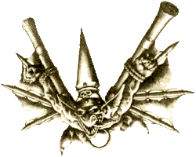

| |
Goblin
halálugró katapult
A goblin
törzsek nagy része nomád életet él, vándorlásaik
során mindenféle dolgokat adnak, vesznek vagy
egyszerûen csak lopnak, egyszóval kereskednek. Jókora
karavánokat állítanak össze az eladásra szánt
termékekbõl, elfogott szörnyekbõl és rabokból.
Ezeket a karavánokat felderítõk védik, akik óriási
farkasaikon ülve a menet elõtt õrjáratoznak
ellenség és kisebb, kifosztható települések
után kutatva. A farkaslovasok meglehetõsen
gyorsan haladnak, de elõre csak korlátozott mértékben
látnak. A kémkedés megkönnyítése végett a
goblinok kifejlesztettek egy különleges
szerkezetet, a Halálugró Katapultot.
| Ez
a gép egy kicsiny, de erõs csúzli, mely képes
olyan magasra kilõni a goblint, ahonnan az ki
tudja kémlelni a karaván elõtti területet.
Persze a megszerzett informá- ciók értéke
meglehetõsen csekély, ha a kém meghal, amint földetéréskor
szétkenõdik a talajon. Hogy felül- kerekedjenek
ezen a problémán, a goblinok egy sor technikát
kipróbáltak. Párnákat kötöztek a halálugrók
testére, ejtõernyõket készítettek, felszerelték
az önkénteseket szárnyakkal. A halálugrók életbentartá-
sára
(ha nem is egy darabban) tett kísérletek közül
végül is a szárnyak ötlete bizonyult a
leghasználhatób- bnak. |
 |
Nem
telelt bele sok idõ, valaki kitalálta, hogy ki
kellene próbálni a katapultot csatában is. Az
ötletet valószínûleg egy baleset adhatta, egy
halálugró elszámította röppályáját, és
becsapódott az ellenséges sereg kellõs közepébe,
ahol óriási kárt és zûrzavart okozott. Ennek
láttán a többi önkéntes komolyan fontolgatni
kezdte ennek az újfajta hadviselésnek az
alkalmazását. A drámaian alacsony túlélési
esélyek nem izgatták õket különösebben,
mivel amúgy se volt ki mind a négy kerekük (A
goblinok szerint csak a legeszementebbek lelhettek
örömöt a röpködésben). Ezek a goblinok a halálugrók.
A halálugrókat
cseppet sem izgatja a többiek véleménye. Mélységesen
komolyan veszik feladatukat, hetekig gyakorolnak,
saját, szigorúan összeállított edzésterveik
alapján. Sziklákról ugrálnak, karjuk erõsítése
végett szárnycsapkodva szaladgálnak, vagy kerítenek
valahonnan egy trollt és ráveszik, hogy dobálja
õket a levegõbe.
Mikor
aztán a nagy nap eljõ, a goblin felszíjazza saját
készítésû szárnyait (a halálugrók sosem bízzák
másra szárnyaik elkészítését, már akkor is
szörnyen dühbe gurulnak, ha valaki meg merészeli
érinteni õket), majd fejére csapja sisakját. A
sisak egy jókora fémtüskében végzõdik, mely
mindenen áthatol, még a legvastagabb sárkánypikkelyt
is képes átütni. Végül a goblin az övén lévõ
karikát beakasztja a csúzliba, és kifeszíti
azt, hogy kellõképpen fel tudjon gyorsulni. A
fegyver erejét egy nyúlékony ín adja, ez repíti
a levegõbe a halálugrót. Az ugrás magassága
attól függ, hogy mennyire tudja kihúzni a
goblin az inat. Pechesebb halálugróknál elõfordulhat,
hogy a rosszul rögzített katapult megcsúszik,
és a vígan erõlködõ goblin képébe csattan.
Mikor nem tudja tovább feszíteni a húrt, a halálugró
kiált egyet, és hangos pendüléssel eltûnik a
levegõben. Amikor eléri röppályája tetõfokát,
szárnyait kihasználva siklani kezd az ellenséges
sereg felé. Mindössze pár másodperce van, hogy
az alatta lévõ hangyaméretû katonák seregébõl
kiválassza célpontját. Ha ez megtörtént szárnyait
testéhez szorítja, és zuhanni kezd az ellenség
valamint a valószínû, de dicsõséges halál
felé.
Lenn
a talajon az elsõ szembetûnõ dolog, melyet a
mit sem sejtõ ellenség észlel, egy apró madárszerû,
visítozó pont, ami a goblin seregbõl emelkedik
a magasba. Aztán a pont egy halálugró egyre növekvõ
sziluettjévé válik, a visítás pedig éktelen
csörömpölésbe csap át, amint a goblin becsapódik.
Néha egy ilyen önfeledten üvöltözõ zöld, szárnyas
lény elég egy osztag megfutamítására. Mikor
aztán a goblin becsapódik, a sisakján
elhelyezkedõ hegy mindent átüt, amit ér. Ha az
egy személy, annak sorsa megpecsételõdött, ha
viszont egy fa, tereptárgy vagy netán a talaj,
akkor a halálugró jókora csattanással szétkenõdik
rajta. Persze megeshet, hogy túléli az ütközést,
és néhány törött csonttal gazdagabban, kétszer,
háromszor is ugrik. Mindenesetre jobb az ellenségbe
csapódva hõsi halált halni, mint egy éhes
troll vacsorájában az elõétel szerepét betölteni.
Warhammer Fantasy Battle szabályok a Halálugró
katapultra vonatkozóan:
A Halálugró
Katapult modell magából a csúzliból és a szárnyakkal
felszerelt Goblinból áll. Bár ez csak egy halálugrót
jelent, elfogadható tetszõleges goblin alkalmazása,
akik felkészülten várakoznak a kilövésre.
(Vagyis minden körben használhatod a
katapultot.) A gépezetet a LÖVÉS FÁZISBAN
lehet mûködtetni, mégpedig a következõképpen:
Elõször
is fordítsd a katapultot a célpont irányába,
majd jelentsd be mekkora távolságra kívánod
kilõni a Goblint. A célpont távolságát nem mérheted
le, meg kell saccolnod a lehetõ legpontosabban...
A lõtávolság nincs behatárolva, bárhová célozhatsz
az asztalon. Ha befejezted a célzást, helyezd az
alapszettben található 2" átmérõjû
sablont a célpont irányába, az általad megállapított
távolságra. A landolás helyének megállapítására
dobj a TÜZÉRSÉGI és a SZÓRÁSKOCKÁVAL.
- Ha a SZÓRÁSKOCKÁN
a HIT felirat található, akkor a halálugró célbatalált
és sebzi az áldozatát.
- Ha a SZÓRÁSKOCKA
nyilat mutat, a Goblin elhibázta a célzást és
a nyíl által mutatott irányában eltér a
sablonnal jelölt célponttól.
- Ha a TÜZÉRSÉGI
kockával MISFIRE-t dobtál, akkor valami hézag
van!!! Dobj D6-ot és a kapott eredményt
egyeztesd az alábbi táblázattal.
| Dobott
érték |
Esemény |
|
1-2
|
HOPPÁRÉ!! A goblin túlhúzta
az ínt, így a csúzli hangos
reccsenéssel kettétörik, majd
darabjai a goblin képébe
csapódnak. A kilövés
sikertelen, a gépezet megsemmisült,
vedd
le a csatatérrõl. |
|
3-4
|
CIKI VAN! a goblin derekáról
lecsúszott az ín, a következõ
körben nem használhatod a
katapultot. |
|
5
|
BUKFENC! A halálugró
elszámolta magát, pörgõ mozgást
végezve D6x10" az
eredeti tervtõl függetlenül a legelsõ
útjába
esõ célpontba zuhan, melyen D6
5-ös erõsségû sebzést okoz. A
gépezet ettõl függetlenül a
szokott módon üzemel a következõ
körben. |
|
6
|
TÚLLÖVÉS. A katapult a
hibás rögzítés miatt véletlenszerû
irányba lövi ki a "lövedéket".
Elõször dobj a szóráskockával,
hogy melyik irányba repül a
goblin. A HIT feliraton szereplõ
nyilat is vedd figyelembe. A
goblin D6x10" távolságban
ér
földet, a jelölt irányban. A
repülés közben korrekció nem
megengedett. A gépezet a következõ
körben a megszokott
módon üzemel. |
- Ha
számot dobtál a TÜZÉRSÉGI kockán és nyilat
a SZÓRÁSKOCKÁN, a szám megmutatja, hogy hány
inch távolságra tér el a goblin a sablontól, a
nyíl pedig, hogy milyen irányban. A sablont
helyezd át a jelzett helyre.
- Ha
HIT-et és számokat dobtál, a számokat
figyelmen kívül hagyhatod, lövedéked célba
talált. (Ha MISFIRE-t dobtál a HIT nem érvényes.)
Mivel a
goblin bizonyos mértékben tudja magát irányítani
szárnyaival, az esetleges eltérést megpróbálhatod
kijavítani. Ha a sablon a SZÓRÁS illetve a TÜZÉRSÉGI
kocka által jelzett ponton van, dobj egy D6-ot és
helyezd vissza azt a kapott értéknek megfelelõ
távolságra az eredeti célpont irányába! Ha a
D6 értéke nagyobb az eltérésnél, a halálugró
újfent elszámolta magát, ott ér földet, ahol
a sablon jelzi.
Nos, miután
a fent említett módon kidolgoztad, hogy hol is
ér földet a halálugród, megérett az idõ a
sebzés kidolgozására. Az a modell amely a
sablon középpontja alatt áll, automatikusan egy
10-es erõsségû ütést szenved. Ez a találat
csak és kizárólag erre az egy modellre
vonatkozik. Miután megdobtad a sebzést, dobj egy
D6-ot, hogy megtudd mennyi sebet kap az áldozat.
Ha a szerencsétlen pára csak egy sebet bír ki,
akkor az már ott halálra ítéltetett, mikor a
sebzést megdobtad, így nincs szükség további
kockadobásra. Nem lehetséges páncél mentõdobás,
mivel a goblin sisakján lévõ tüske a
legvastagabb páncélt is átüti. Azon modellek,
melyek talpa a sablon többi része alatt van,
abban az esetben sérülnek, ha a D6-on 4+-t dobtál.
Te döntesz hány modellt kívánsz megsebezni,
hiszen jogodban áll mindazon figurákat, melyek
talapzatának a fele a sablon alá esik. Ezek
tulajdonképpen, nem a sisakon lévõ dárdától
sérülnek, hanem a becsapódáskor szerteröppenõ
fegyver- és páncéldaraboktól. Ez közel sem
olyan veszélyes, mint a szurony hegye, így a
goblin csak egy ötös erõsségû sebzést
okozhat az eltalált áldozatokon. Ebben az
esetben az áldozat kihasználhatja a mentõdobás
adta lehetõséget.
A
katapultot a goblin mozgathatja, egy körben
maximum 4" távolságra. Ha a géppel célzáson
kívül bármilyen más mozgást végeztél, abban
a körben nem lõhetsz vele. Mint említve volt,
tetszõleges számú képzeletbeli halálugró várakozhat
kilövésre, ezért a goblin modellt nem kell
levenni a kilövés után, hanem a gépezet mögött
maradhat, jelezvén, hogy újabb önkéntes áll készenlétben.
Ha a halálugrót lelövik, akkor a következõ körben
a katapult nem lõhet. (Abban a körben vedd le a
halálugró modellt!) Ha a gépezetet elpusztítják,
vagy a legénység alulmarad kézitusában,
sikertelen pszichológiai tesztet végez, a
katapultot végleg le kell venni a csatatérrõl.
Warhammer Fantasy Battle sereglista a Halálugró
katapultra vonatkozóan:
Halálugró
katapult: 100 pont.
| |
Maximum
lõtáv |
Erõ |
Sebzés |
Mentõdobás
|
| Direkt találat |
Bárhol a
csatatéren |
10 |
D6 |
NINCS |
| Egyéb |
Bárhol a
csatatéren |
5 |
1 |
-2 |
| |
M |
Ws |
Bs |
S |
T |
W |
I |
A |
Ld |
| Katapult |
- |
- |
- |
- |
7 |
3 |
- |
- |
- |
| Halálugró |
4 |
2 |
3 |
3 |
3 |
1 |
2 |
1 |
5 |
írta: Gabesz (Troll melléklet,
Holdtölte magazin 4. évf. 4. szám)
|
|